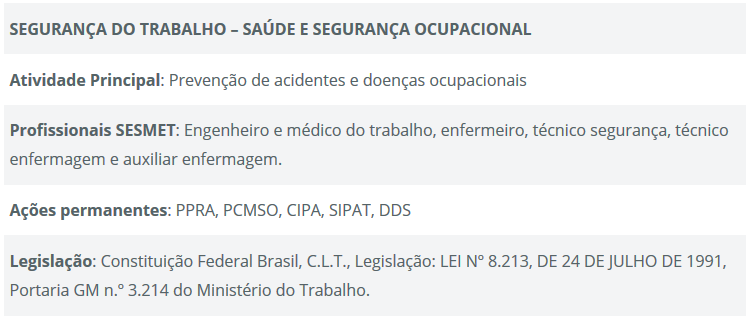

O que é Segurança do Trabalho?
Segurança do trabalho pode ser entendida como os conjuntos de medidas que são adotadas visando minimizar os acidentes de trabalho, doenças ocupacionais, bem como proteger a integridade e a capacidade de trabalho do trabalhador. No post de hoje, vamos entender alguns conceitos e como as empresas tem lidado com este assunto.
Quais os objetivos da Segurança do Trabalho
- Evitar acidentes e doenças relacionadas a atividade profissional;
- Eliminar as condições inseguras de trabalho;
- Preparar e conscientizar o trabalhador sobre a prevenção de acidentes do trabalho;
- Cumprir requisitos legais;
- Estabelecer melhores condições físicas e psíquicas no trabalho;
- Melhor as condições de eficiência e de produtividade no ambiente de trabalho.
A Segurança do Trabalho é definida por normas e leis.
No Brasil, a Legislação de Segurança do Trabalho compõe-se de normas regulamentadoras, leis complementares, como portarias e decretos e também as convenções Internacionais da Organização Internacional do Trabalho, ratificadas pelo Brasil.
O quadro de Segurança do Trabalho de uma empresa compõe-se de uma equipe multidisciplinar composta por Técnico de Segurança do Trabalho, Engenheiro de Segurança do Trabalho, Médico do Trabalho e Enfermeiro do Trabalho. Estes profissionais formam o que chamamos de SESMT – Serviço Especializado em Engenharia de Segurança e Medicina do Trabalho.
Também os empregados da empresa constituem a CIPA – Comissão Interna de Prevenção de Acidentes, que tem como objetivo a prevenção de acidentes e doenças decorrentes do trabalho, de modo a tornar compatível permanentemente o trabalho com a preservação da vida e a promoção da saúde do trabalhador.
Como sei como a equipe do SESMT deve ser composta? E qual o tamanho da CIPA?
O dimensionamento do SESMT e da CIPA é feito através da Norma Regulamentadora nº 04 e nº 05 respectivamente. Este cálculo é baseado no grau de risco da atividade da empresa e do número total de funcionários.
A empresa deve adotar as medidas exigidas por lei não somente porque é obrigatório mas sim porque a Segurança do Trabalho faz com que a empresa se organize, aumentando a produtividade e a qualidade dos produtos, melhorando as relações humanas no trabalho.
ISO 45001 – Levando a sério a segurança do trabalho
Algumas empresas a fim de aprimorar este assunto na organização, optam pela implementação de um sistema de gestão de saúde e segurança ocupacional (SSO).
Atualmente, o sistema de SSO mais conhecido é a ISO 45001.Este sistema ajuda às organizações no momento de fornecer locais de trabalho seguros e saudáveis, com foca na prevenção de lesões e doenças oriundas do trabalho. Com a ISO 45001 é possível prover uma estrutura adequada no gerenciamento dos riscos e oportunidades de saúde e segurança do trabalho, além de gerar valor para organização.
Os requisitos da norma tem por objetivo melhora significativamente o desempenho de SSO de uma organização, como a diminuição dos índices de acidente e entre outros indicadores.

Quais são as principais normas que regulamentam a segurança do trabalho?
- NR 1 – Disposições Gerais;
- NR 2 – Inspeção Prévia;
- NR 3 – Embargo ou Interdição;
- NR 4 – Serviços Especializados em Engenharia de Segurança e em Medicina do Trabalho;
- NR 5 – Comissão Interna de Prevenção de Acidentes;
- NR 6 – Equipamentos de Proteção Individual (EPI);
- NR 7 – Programas de Controle Médico de Saúde Ocupacional (PCMSO);
- NR 8 – Edificações;
- NR 9 – Programas de Prevenção de Riscos Ambientais;
- NR 10 – Segurança em Instalações e Serviços em Eletricidade;
- NR 11 – Transporte, Movimentação, Armazenagem e Manuseio de Materiais;
- NR 12 – Segurança no Trabalho em Máquinas e Equipamentos;
- NR 13 – Caldeiras, Vasos de Pressão e Tubulações;
- NR 14 – Fornos;
- NR 15 – Atividades e Operações Insalubres;
- NR 16 – Atividades e Operações Perigosas;
- NR 17 – Ergonomia;
- NR 18 – Condições e Meio Ambiente de Trabalho na Indústria da Construção;
- NR 19 – Explosivos;
- NR 20 – Segurança e Saúde no Trabalho com Inflamáveis e Combustíveis;
- NR 21 – Trabalho a Céu Aberto;
- NR 22 – Segurança e Saúde Ocupacional na Mineração;
- NR 23 – Proteção Contra Incêndios;
- NR 24 – Condições Sanitárias e de Conforto nos Locais de Trabalho;
- NR 25 – Resíduos Industriais;
- NR 26 – Sinalização de Segurança;
- NR 27 – Revogada pela Portaria GM n.º 262, 29052008, Registro Profissional do Técnico de Segurança do Trabalho no MTB;
- NR 28 – Fiscalização e Penalidades;
- NR 29 – Segurança e Saúde no Trabalho Portuário;
- NR 30 – Segurança e Saúde no Trabalho Aquaviário;
- NR 31 – Segurança e Saúde no Trabalho na Agricultura, Pecuária Silvicultura, Exploração Florestal e Aqüicultura;
- NR 32 – Segurança e Saúde no Trabalho em Estabelecimentos de Saúde;
- NR 33 – Segurança e Saúde no Trabalho em Espaços Confinados;
- NR 34 – Condições e Meio Ambiente de Trabalho na Indústria da Construção e Reparação Naval;
- NR 35 – Trabalho em Altura;
- NR 36 – Segurança e Saúde no Trabalho em Empresas de Abate e Processamento de Carnes e Derivados.
Quais são as funções de quem atua na segurança do trabalho?
As funções dos profissionais que atuam na segurança do trabalho podem variar de acordo com o nível da formação, e cada profissional tem papel importante na composição da equipe.
Engenheiro de Segurança do Trabalho
- cria planos de prevenção;
- produz laudos técnicos;
- elabora e assina documentos e projetos de segurança;
- desenvolve programas de prevenção;
- realiza inspeções;
- orienta os colaboradores;
- analisa a conformidade da empresa para atender às exigências legais.
Técnico em segurança do trabalho
- realiza inspeções no local de trabalho e em equipamentos para averiguar fatores de riscos;
- elabora e ministra treinamentos de segurança;
- orienta funcionários sobre normas de segurança;
- investiga causas de acidentes para propor medidas de prevenção.
Médico do trabalho
- responsabiliza-se pela saúde ocupacional;
- realiza exames de admissão e demissão;
- oferece consultas em caso de acidentes;
- oferece consultas para prevenir doenças ocupacionais.
Enfermeiro do trabalho
- apoia e orienta os funcionários sobre melhores práticas de saúde ebem-estar;
- trata ferimentos e lesões;
- gestão da equipe e saúde dos funcionários.
11 dicas para a prevenção de acidentes
- Preze pela atenção no trabalho
- Evite a exposição imprudente ao risco
- Mantenha o local de trabalho limpo e organizado
- Exija o uso dos Equipamentos de Proteção Individual (EPIs)
- Cuide de você e do seu colega de trabalho
- Comunique incidentes
- Informe-se sobre a CIPA
- Use apenas máquinas de trabalho que passaram por revisão
- Abandone ferramentas em más condições
- Limite-se apenas às suas funções
- Opere máquinas com responsabilidade